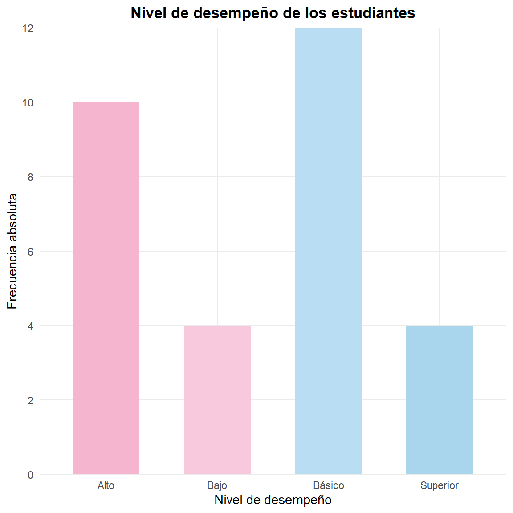
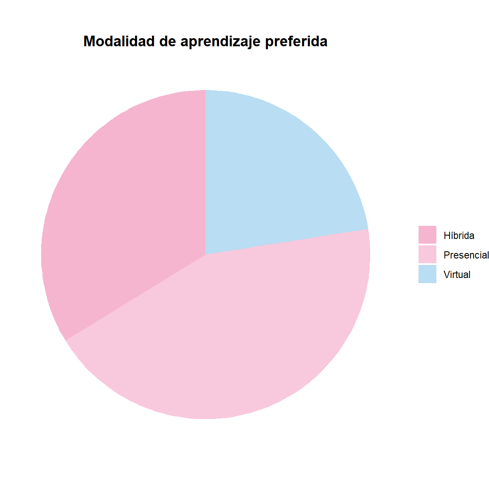

El análisis estadístico de datos educativos permite transformar grandes cantidades de información en resultados comprensibles que facilitan la toma de decisiones. En contextos escolares y universitarios es frecuente disponer de datos relacionados con calificaciones, asistencia, edad, rendimiento académico, horas de estudio, participación en clase, uso de recursos tecnológicos y diferentes características sociodemográficas de los estudiantes.
Una de las primeras etapas del análisis estadístico consiste en organizar y resumir los datos. Las distribuciones de frecuencias constituyen una herramienta fundamental para este propósito, ya que permiten identificar cómo se distribuyen los valores de una variable y, posteriormente, estudiar la relación entre dos variables.
En este contexto, se distinguen principalmente las distribuciones de frecuencias unidimensionales, que estudian una variable, y las distribuciones de frecuencias bidimensionales, que analizan simultáneamente dos variables.
3 .Conceptos fundamentales
3.1Población y muestra
En estadística educativa, la población corresponde al conjunto total de individuos sobre los cuales se desea obtener información. Por ejemplo, todos los estudiantes matriculados en una institución educativa durante un determinado año académico.
La muestra es un subconjunto de la población seleccionado para realizar el estudio.
Por ejemplo:
Población: todos los estudiantes de grado décimo de una institución.
Muestra: 80 estudiantes seleccionados para estudiar sus hábitos de estudio.
El análisis estadístico puede realizarse sobre la población completa o sobre una muestra, dependiendo de los objetivos y recursos disponibles.
3.2Variable estadística
Una variable estadística representa una característica que puede ser observada o medida en los individuos de una población o muestra.
En educación pueden encontrarse variables como:
Edad del estudiante.
Sexo o género.
Nivel educativo.
Calificación obtenida en una evaluación.
Número de horas dedicadas al estudio.
Porcentaje de asistencia.
Número de asignaturas aprobadas.
Nivel de satisfacción con una asignatura.
Las variables pueden clasificarse en cualitativas y cuantitativas.
3.2.1Variables cualitativas
Describen características o categorías que no representan cantidades numéricas directamente.
Ejemplos:
Jornada: mañana, tarde, noche.
Tipo de institución: pública, privada.
Nivel de satisfacción: bajo, medio, alto.
Modalidad: presencial, virtual, híbrida.
3.2.2Variables cuantitativas
Representan cantidades numéricas y permiten realizar operaciones aritméticas.
Continuas: pueden tomar cualquier valor dentro de un intervalo.
Ejemplo:tiempo dedicado al estudio, expresado en horas.
4 Distribución de frecuencias unidimensional
Una distribución de frecuencias unidimensional describe la forma en que se distribuyen los valores de una única variable estadística.
Su objetivo principal es organizar los datos de manera que sea posible conocer:
qué valores o categorías aparecen;
cuántas veces aparece cada valor;
qué proporción representa cada valor;
cómo se acumulan las observaciones;
y cuál es la estructura general de los datos.
Por ejemplo, si se desea estudiar el nivel de desempeño académico de un grupo de estudiantes, puede analizarse una única variable denominada rendimiento, con categorías como:
Bajo.
Básico.
Alto.
Superior.
La distribución de frecuencias permite determinar cuántos estudiantes pertenecen a cada categoría.
4.1Tipos de frecuencias
4.1.1Frecuencia absoluta
La frecuencia absoluta de un valor o categoría es el número de veces que dicho valor aparece en el conjunto de datos.
Se representa habitualmente mediante:
f_i
donde f\_i representa la frecuencia absoluta correspondiente a la categoría o valor i.
La suma de todas las frecuencias absolutas debe ser igual al número total de observaciones:
\sum_{i=1}^{k} f_i = n
donde:
n = número total de observaciones;
k = número de valores o categorías.
Ejemplo educativo
Supóngase que se registra el nivel de desempeño de 30 estudiantes:
Nivel
Frecuencia absoluta
Bajo
4
Básico
12
Alto
10
Superior
4
Total
30
4.1.2 Gráfico de barras del nivel de desempeño
4.1.3 Gráfico de barras del nivel de desempeño
Ver código
desempeno <-data.frame(Nivel =c("Bajo", "Básico", "Alto", "Superior"),Frecuencia =c(4, 12, 10, 4))ggplot(desempeno, aes(x = Nivel, y = Frecuencia, fill = Nivel)) +geom_col(width =0.6) +scale_fill_manual(values =c("Bajo"="#F8C8DC","Básico"="#B9DDF2","Alto"="#F5B5CF","Superior"="#A9D6EC" )) +scale_y_continuous(breaks =seq(0, 12, by =2),limits =c(0, 12),expand =c(0, 0) ) +labs(title ="Nivel de desempeño de los estudiantes",x ="Nivel de desempeño",y ="Frecuencia absoluta" ) +theme_minimal() +theme(legend.position ="none",plot.title =element_text(hjust =0.5, face ="bold"),panel.grid.minor =element_blank() )

4.1.4Frecuencia relativa
La frecuencia relativa indica qué proporción del total de observaciones corresponde a una determinada categoría.
Se calcula mediante:
h_i = \frac{f_i}{n}
donde:
h\_i = frecuencia relativa;
f\_i = frecuencia absoluta;
n = número total de observaciones.
Cuando se expresa como porcentaje:
h_i(\%) = \frac{f_i}{n}\times100
En el ejemplo anterior, si 12 de los 30 estudiantes presentan un rendimiento básico:
h_i = \frac{12}{30}=0.40
Por tanto:
h_i(\%)=40\%
La interpretación sería: el 40 % de los estudiantes presenta un nivel de desempeño básico.
4.1.5Frecuencia absoluta acumulada
La frecuencia absoluta acumulada representa el número de observaciones que se encuentran hasta una determinada categoría o valor.
Se representa como:
F_i
y se calcula mediante:
F_i = \sum_{j=1}^{i} f_j
Esta medida es especialmente útil cuando la variable posee un orden natural, como:
edad;
calificaciones;
niveles de desempeño;
número de horas de estudio.
Por ejemplo, si las calificaciones se encuentran ordenadas de menor a mayor, la frecuencia acumulada permite determinar cuántos estudiantes obtuvieron una calificación menor o igual a determinado valor.
4.1.6Frecuencia relativa acumulada
La frecuencia relativa acumulada expresa la proporción o porcentaje de observaciones acumuladas hasta una determinada categoría.
Se representa como:
H_i
y puede calcularse mediante:
H_i = \sum_{j=1}^{i} h_j
o equivalentemente:
H_i = \frac{F_i}{n}
Cuando se expresa en porcentaje:
H_i(\%)=\frac{F_i}{n}\times100
La frecuencia relativa acumulada permite realizar interpretaciones como:
El 75 % de los estudiantes obtuvo una calificación menor o igual a 4,0.
4.2Distribuciones según el tipo de variable
4.2.1Variables cualitativas
Cuando la variable es cualitativa, las categorías constituyen los valores que se organizan en la tabla de frecuencias.
Por ejemplo, puede analizarse la modalidad de aprendizaje preferida por los estudiantes.
Modalidad
Frecuencia
Porcentaje
Presencial
35
43,75 %
Virtual
18
22,50 %
Híbrida
27
33,75 %
Total
80
100 %
En este caso, las frecuencias acumuladas no necesariamente tienen sentido si las categorías no poseen un orden natural.
Por esta razón, la naturaleza de la variable debe considerarse antes de seleccionar las medidas estadísticas apropiadas.
4.2.2 Gráfico circular de la modalidad de aprendizaje
Ver código
modalidad <-data.frame(Modalidad =c("Presencial", "Virtual", "Híbrida"),Frecuencia =c(35, 18, 27))ggplot(modalidad, aes(x ="", y = Frecuencia, fill = Modalidad)) +geom_col(width =1) +coord_polar(theta ="y") +scale_fill_manual(values =c("Presencial"="#F8C8DC","Virtual"="#B9DDF2","Híbrida"="#F5B5CF" )) +labs(title ="Modalidad de aprendizaje preferida" ) +theme_void() +theme(plot.title =element_text(hjust =0.5, face ="bold"),legend.title =element_blank() )

4.2.3Variables cuantitativas
Cuando una variable cuantitativa posee pocos valores diferentes, puede construirse una tabla de frecuencias utilizando directamente los valores observados.
Sin embargo, cuando existen muchos valores diferentes, es conveniente agruparlos en intervalos o clases.
Por ejemplo, las calificaciones de 100 estudiantes podrían agruparse así:
Intervalo de calificación
Frecuencia
[0,0 - 2,0)
8
[2,0 - 3,0)
17
[3,0 - 4,0)
45
[4,0 - 5,0]
30
Total
100
El agrupamiento facilita la interpretación de la distribución, aunque implica cierta pérdida de información respecto de los datos originales.
5 .Elementos de una tabla de frecuencias
Una tabla de frecuencias puede incluir diferentes columnas según el tipo de variable y los objetivos del análisis.
Una estructura habitual es:
Valor o intervalo
fᵢ
hᵢ
Fᵢ
Hᵢ
Categoría 1
f₁
h₁
F₁
H₁
Categoría 2
f₂
h₂
F₂
H₂
…
…
…
…
…
Total
n
1
n
1
Esta estructura permite observar simultáneamente la cantidad de estudiantes, su proporción y la acumulación de las observaciones.
5.1Representaciones gráficas unidimensionales
Las tablas de frecuencia pueden complementarse con representaciones gráficas.
La selección del gráfico depende del tipo de variable.
5.1.1 Gráfico de barras
Es apropiado principalmente para variables cualitativas o cuantitativas discretas.
En educación puede utilizarse para comparar el número de estudiantes según:
nivel de desempeño;
jornada;
modalidad educativa;
grado escolar.
5.1.2 Histograma
Es apropiado para variables cuantitativas continuas o variables cuantitativas agrupadas en intervalos.
Por ejemplo:
Distribución de las calificaciones obtenidas por los estudiantes.
5.1.3 Gráfico circular
Puede utilizarse para mostrar la composición porcentual de una variable categórica cuando existe un número reducido de categorías.
Sin embargo, para comparar categorías con precisión, generalmente es preferible un gráfico de barras.
5.1.4 Polígono de frecuencias
Permite representar la distribución de una variable cuantitativa mediante segmentos que unen las frecuencias correspondientes a los puntos medios de los intervalos.
6 .Distribución de frecuencias bidimensional
Una distribución de frecuencias bidimensional analiza simultáneamente dos variables estadísticas observadas sobre los mismos individuos.
Su propósito es estudiar cómo se comportan conjuntamente dos características.
En educación, algunos ejemplos son:
horas de estudio y calificación;
asistencia y rendimiento académico;
edad y promedio académico;
modalidad educativa y rendimiento;
acceso a internet y desempeño académico.
Si las variables se representan mediante X e Y, una distribución bidimensional analiza los pares:
(X,Y)
Por ejemplo:
(5\text{ horas},4.2)
puede representar un estudiante que dedica cinco horas semanales al estudio y obtiene una calificación promedio de 4,2.
6.1 Tabla de frecuencias bidimensional
Cuando ambas variables son categóricas o han sido agrupadas en categorías, puede utilizarse una tabla de contingencia.
Supóngase que se analiza la relación entre modalidad educativa y nivel de desempeño.
Modalidad
Bajo
Básico
Alto
Superior
Total
Presencial
3
12
18
7
40
Virtual
5
14
9
2
30
Híbrida
2
8
14
6
30
Total
10
34
41
15
100
Cada celda contiene una frecuencia conjunta.
Por ejemplo, el valor 18 indica que 18 estudiantes pertenecen simultáneamente a las categorías:
modalidad presencial;
nivel de desempeño alto.
6.1.1 Gráfico de barras: modalidad educativa y desempeño
Las frecuencias marginales se obtienen sumando las frecuencias conjuntas por filas o columnas.
En la tabla anterior:
El total de la fila “Presencial” es 40.
El total de la columna “Alto” es 41.
El total general es 100.
Las frecuencias marginales permiten estudiar cada variable por separado dentro del contexto de la distribución bidimensional.
Por ejemplo:
f_{i\cdot} = \sum_j f_{ij}
representa la frecuencia marginal de la variable X.
Mientras que:
f_{\cdot j} = \sum_i f_{ij}
representa la frecuencia marginal de la variable Y.
6.2 Frecuencias relativas conjuntas
La frecuencia relativa conjunta indica la proporción de individuos que pertenecen simultáneamente a una categoría de X y una categoría de Y.
Se calcula mediante:
h_{ij}=\frac{f_{ij}}{n}
Por ejemplo, si 18 de 100 estudiantes presentan simultáneamente modalidad presencial y rendimiento alto:
h_{ij}=\frac{18}{100}=0.18
Por tanto, el 18 % de los estudiantes pertenece simultáneamente a esas dos categorías.
6.3 Frecuencias condicionadas
Las frecuencias condicionadas permiten estudiar una variable teniendo en cuenta una categoría específica de la otra variable.
Por ejemplo, puede preguntarse:
Dentro de los estudiantes que estudian en modalidad presencial, ¿qué porcentaje presenta rendimiento alto?
En este caso se calcula:
h_{j|i}=\frac{f_{ij}}{f_{i\cdot}}
Si existen 18 estudiantes con rendimiento alto entre 40 estudiantes presenciales:
h_{j|i}=\frac{18}{40}=0.45
Por tanto, el 45 % de los estudiantes presenciales presenta rendimiento alto.
Este tipo de análisis resulta particularmente importante en investigación educativa porque permite realizar comparaciones entre grupos.
7 .Relaciones entre variables
7.1 Independencia estadística
Dos variables pueden presentar diferentes grados de asociación.
Se dice que dos variables son estadísticamente independientes cuando el comportamiento de una no proporciona información sobre la otra.
En términos de probabilidades:
P(X=x_i,Y=y_j)=P(X=x_i)P(Y=y_j)
En una tabla de contingencia, una forma de explorar esta situación consiste en comparar las frecuencias observadas con las frecuencias esperadas bajo el supuesto de independencia.
Las frecuencias esperadas pueden calcularse mediante:
E_{ij}=
\frac{f_{i\cdot}f_{\cdot j}}{n}
La evaluación formal de la independencia puede realizarse mediante pruebas estadísticas, como la prueba chi-cuadrado de independencia, cuando sus supuestos son apropiados.
7.2 Asociación y correlación
Cuando las variables son cuantitativas, además de construir distribuciones bidimensionales, es posible estudiar su asociación mediante herramientas como la covarianza y el coeficiente de correlación.
El coeficiente de correlación de Pearson se expresa como:
r=
\frac{\operatorname{Cov}(X,Y)}
{s_Xs_Y}
Su valor se encuentra entre -1 y 1.
De manera general:
r cercano a 1: asociación lineal positiva.
r cercano a -1: asociación lineal negativa.
r cercano a 0: ausencia de asociación lineal apreciable.
En educación, por ejemplo, puede analizarse la relación entre horas de estudio y calificación.
Es importante destacar que correlación no implica causalidad. Una asociación estadística entre dos variables no demuestra por sí misma que una variable sea la causa de la otra.
8 Análisis e interpretación de datos educativos
8.1 Importancia de las distribuciones de frecuencias en educación
Las distribuciones de frecuencias constituyen una herramienta básica para el análisis exploratorio de datos educativos porque permiten pasar de datos individuales a información resumida y comprensible.
Su aplicación permite:
Identificar los valores o categorías más frecuentes.
Conocer la distribución de los estudiantes entre diferentes niveles.
Detectar concentraciones o dispersión de los datos.
Comparar grupos educativos.
Identificar posibles patrones.
Preparar los datos para análisis estadísticos posteriores.
Comunicar resultados de forma clara a docentes, investigadores y responsables de decisiones.
Por ejemplo, una institución puede utilizar una distribución de frecuencias para identificar la proporción de estudiantes que se encuentra en cada nivel de desempeño y posteriormente utilizar una distribución bidimensional para explorar si dicho desempeño presenta diferencias según la modalidad educativa.
8.2 Interpretación estadística en el contexto educativo
La construcción de una tabla o gráfico no constituye por sí misma el análisis estadístico. Es necesario interpretar los resultados en relación con el problema educativo investigado.
Una interpretación adecuada debería responder preguntas como:
¿Cuál es la categoría con mayor frecuencia?
¿Qué porcentaje de estudiantes pertenece a cada grupo?
¿Existe concentración de las observaciones?
¿Hay diferencias entre grupos?
¿Existe evidencia de asociación entre las variables?
¿Qué implicaciones pueden tener los resultados para la práctica educativa?
¿Qué limitaciones tiene la información disponible?
Por ejemplo, no es suficiente afirmar:
“El 45 % de los estudiantes presenta rendimiento alto.”
Una interpretación más completa podría indicar:
“El 45 % de los estudiantes de la muestra presenta un nivel de rendimiento alto, constituyendo la categoría con mayor representación. Este resultado describe la composición de la muestra, pero no permite por sí mismo establecer las causas del rendimiento ni generalizar los resultados a toda la población si la muestra no es representativa.”
8.3 Buenas prácticas para el análisis de datos educativos
Al trabajar con información educativa es recomendable considerar las siguientes prácticas:
Definir claramente la población y la muestra.
Identificar correctamente el tipo de cada variable.
Revisar valores faltantes y valores atípicos.
Evitar interpretar porcentajes sin conocer el tamaño de la muestra.
Seleccionar gráficos apropiados para cada tipo de variable.
Diferenciar asociación estadística de causalidad.
Mantener separados los datos originales y los datos transformados.
Documentar las decisiones realizadas durante el análisis.
Utilizar código reproducible.
Proteger la privacidad de los estudiantes.
Evitar publicar información que permita identificar individualmente a los participantes.
La privacidad adquiere especial importancia en educación, ya que los conjuntos de datos pueden contener información sensible de estudiantes, familias y docentes.
9 Síntesis conceptual y conclusiones
9.1 Síntesis conceptual
Las distribuciones de frecuencias unidimensionales permiten estudiar individualmente una variable y conocer cómo se distribuyen sus valores o categorías.
Las principales frecuencias son:
f_i = \text{frecuencia absoluta}
h_i = \frac{f_i}{n}
F_i = \sum_{j=1}^{i} f_j
H_i = \frac{F_i}{n}
Por su parte, las distribuciones bidimensionales estudian conjuntamente dos variables y permiten analizar:
frecuencias conjuntas;
frecuencias marginales;
frecuencias condicionadas;
asociación entre variables;
independencia estadística;
correlación cuando las variables son cuantitativas.
En el contexto educativo, estas herramientas permiten responder preguntas descriptivas y exploratorias relevantes, como:
¿Cómo se distribuyen las calificaciones de los estudiantes?
¿Qué proporción de estudiantes pertenece a cada nivel de desempeño?
¿Cómo se distribuye el rendimiento según la modalidad educativa?
¿Existe asociación entre asistencia y rendimiento académico?
¿Existe relación entre las horas de estudio y las calificaciones?
9.2 Conclusiones
Las distribuciones de frecuencias constituyen uno de los fundamentos del análisis estadístico de datos educativos. Su importancia radica en que permiten organizar información compleja y convertir observaciones individuales en resultados interpretables.
El análisis unidimensional proporciona una primera aproximación al comportamiento de cada variable, mientras que el análisis bidimensional permite estudiar conjuntamente dos características y explorar posibles relaciones o diferencias entre ellas.
No obstante, las herramientas estadísticas deben utilizarse acompañadas de una adecuada comprensión del contexto. Una frecuencia, porcentaje o asociación estadística describe los datos, pero su interpretación debe considerar el diseño del estudio, las características de la muestra, la calidad de los datos y las limitaciones metodológicas.
En consecuencia, el objetivo del análisis estadístico educativo no debe limitarse a producir tablas y gráficos, sino a transformar los datos en evidencia que contribuya a comprender los procesos educativos y apoyar decisiones fundamentadas.